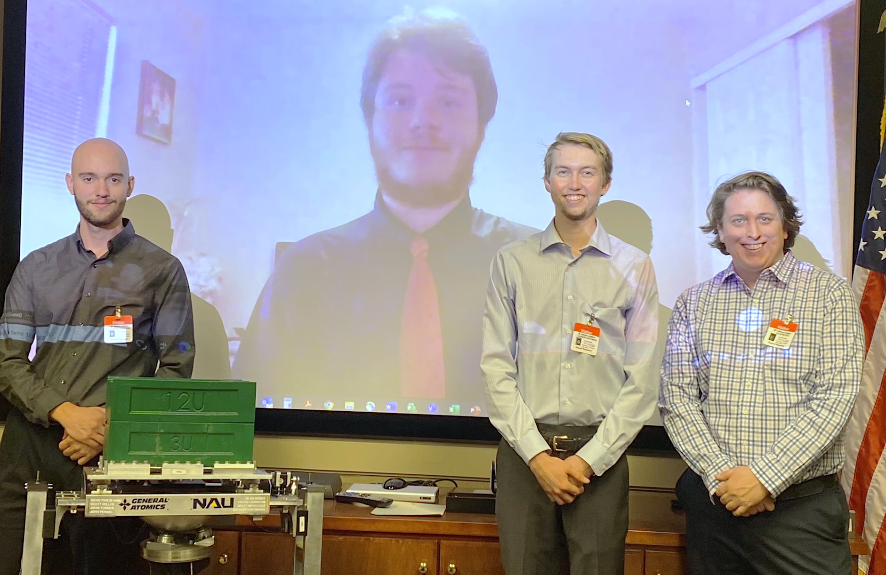

Hello, my name is
Majoring in mechanical engineering with a minor in electrical engineering has given me the opportunity to design, analyze, and troubleshoot both mechanical and electrical systems. In particular, I have a breadth of experience performing analysis and simulation using SOLIDWORKS and MATLAB/Simulink. I am skilled at programming in MATLAB, C/C++, and Python. I also have experience working with control systems in S- and Z-domains, including lead and lag compensators, PID controllers, state space representation, and linear quadratic regulators/estimators.
My determination, analytical mindset, and passion for learning will make me a valuable addition to any team. If you have any questions for me, please feel free to reach out to me by email or via my LinkedIn profile. Thank you very much for your time.
Bachelor of Science in Mechanical Engineering, Minor in Electrical Engineering (ABET accredited)
Graduated: December 2021
Cumulative GPA: 3.12 / 4.00
Photo by Joshbiggs, CC BY-SA 4.0, via Wikimedia Commons
Project objectives: Design a fixture to interface between a spherical air bearing and a satellite undergoing testing. The fixture must allow the combined center of mass (COM) of the fixture, the bearing, and the satellite to be precisely colocated with the bearing's center of rotation (COR), including satellites of various form factors.
Final design: Our fixture uses satellite mounting brackets affixed to a system of movable carriages to change the satellite's position relative to the air bearing. This permits the satellite's COM to be aligned with the bearing COR along two axes, while the repositioning of two weights allows alignment along the vertical axis. The fixture is outfitted with sensors which identify the assembly's COM location, a microcontroller which computes the satellite and weight positions required to achieve colocation, and motors which drive the translation of the carriages and weights to the appropriate locations.
Project outcomes: While the project is ongoing, current prototypes inspire confidence in the current design.
Rendering of the SOLIDWORKS assembly created for the fixture. Pocketing on the bottom face of the base plate allows the part to be lightweight yet stiff to resist deflection. Lead screws and linear rods permit translation with minimal friction.
Capstone team presenting final design to General Atomics in Huntsville, AL on 12/15/2021
From left: Travis Harrison, Scott Mesoyedz (on screen), Connor Hoffmann, Sean McGee
Project objectives: Calculate temperature distribution across 2D plate at steady state given prescribed boundary conditions, using MATLAB to compute results by numerical methods.
Final design: The MATLAB script created for this project assigns a "type" to each finite element depending on the boundary conditions present on that element. It then populates a coefficient matrix according to each element's type and solves the resulting system of equations for the temperature of each node.
Project outcomes: The resulting 2D temperature distribution was displayed as a surface plot (shown right), while line plots were used to display the temperature distribution along each external edge of the geometry. The generated surface plot qualitatively matches the verification plot provided by my instructor, and the calculated net heat flow out of the geometry differs from the expected value by about (5⨯10^-18) percent.
Resulting temperature distribution using 20⨯40 elements. The shaded region on the X-Y plane illustrates the surface of interest, while the vertical rectangular column illustrates the region of heat generation.
Project objectives: Design and carry out a scientific experiment using the equipment available in NAU's thermal fluids laboratory.
Selected design: My proposal involved measuring the temperature profile of a heat sink placed on a hot plate. Twelve K-type thermocouples were calibrated and installed along various surfaces of the heat sink which was then heated and allowed to reach steady-state conditions, whereupon temperature data was captured and stored. Experimental results were then compared to results from MATLAB and ANSYS simulations.
Project outcomes: The experiment was conducted successfully and yielded reliable data. Simulation results were within ±5°C of experimental results.
Plot from MATLAB PDE Toolbox simulation illustrating isosurfaces of the convection coefficient h.
Project objectives: Design a winch system which delivers 4,000 in·lbf of torque to the drum at a speed of 30-35 rpm. The project was split into three sections (geartrain selection, shaft design, and bearing selection), each of which required a report with accompanying SOLIDWORKS models and calculations. A particular emphasis was placed on simulating a real-world design scenario: there was not a "correct design" and performance requirements were vague and conflicting, which required students to make several judgement calls about which aspects of performance were most critical.
Selected design: Our calculations indicated that delivering the required 4,000 in·lbf of torque at the lowest required speed of 30 rpm would require 1.9 hp before accounting for losses, exceeding the 1.2 hp output from the prescribed motor. We reasoned that the torque output requirement was more critical than the speed requirement, and designed the system accordingly using a larger gear ratio to produce the necessary reduction. We also iterated the design multiple times as constraints from one phase would require changes to a prior design decision. Since the shaft was designed prior to selecting bearings, for instance, we discovered that our shaft exceeded the maximum angular deflection requirements for all appropriate bearings requiring modifications to the shaft design. Our design ultimately used an 80:1 worm gear reduction, a shaft major diameter of 2.60", and flanged bronze bushings supporting the shaft.
Project outcomes: The final design meets stated requirements for torque output, factor of safety, reliability, and heat dissipation. The design only falls short of the aforementioned output speed, operating instead at an output speed of around 15 rpm.
Rendering of SOLIDWORKS assembly for final winch design. Some elements are rendered as transparent to better illustrate the design.